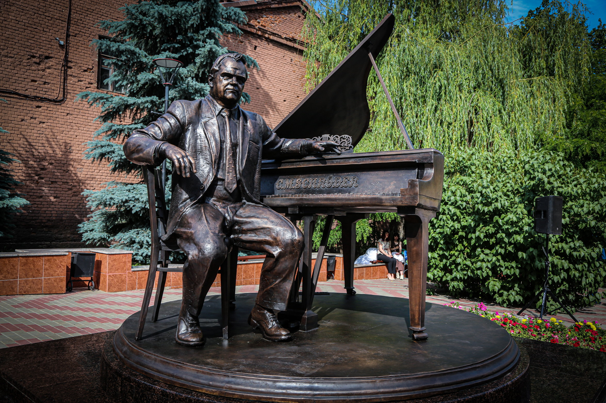
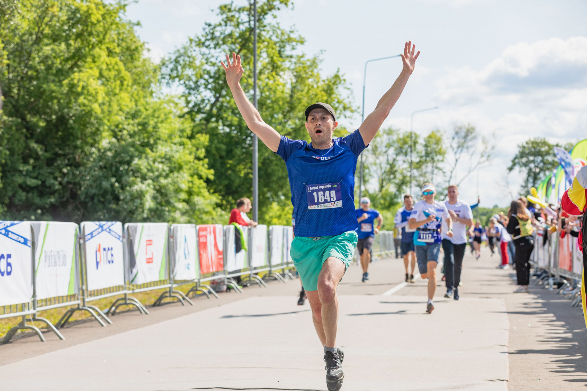
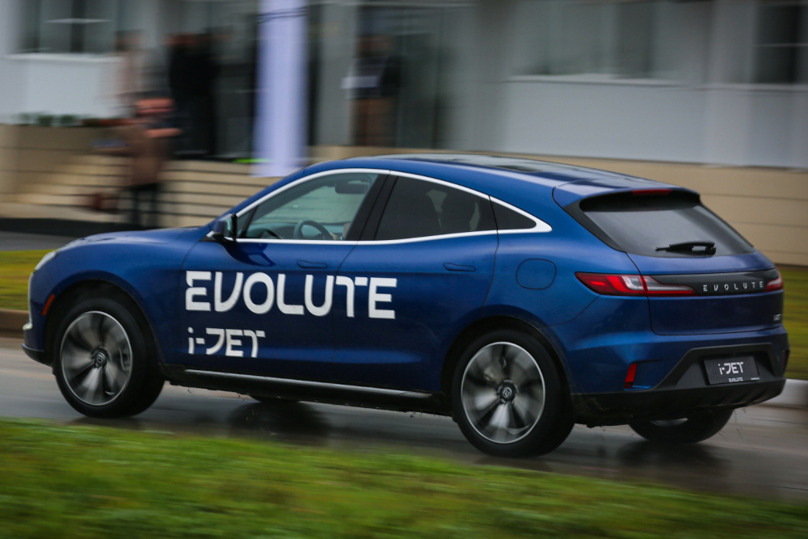
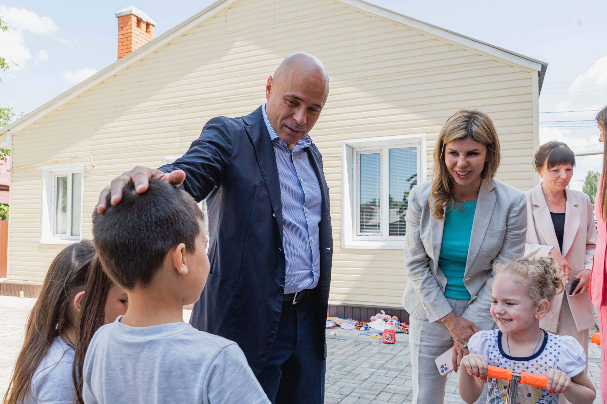

Все контакты
Общество
сегодня в 18:30

Изготовленный Зурабом Церетели памятник Тихону Хренникову открыли в Ельце
Новая достопримечательность появилась в Ельце. Здесь открыли памятник композитору Тихону Хренникову. В этом году исполняется 110 лет со дня его рождения. Двухтонная скульптура полностью из бронзы. Её создал народный художник СССР и России, президент Российской академии художеств Зураб Церетели. Это первая его работа, установленная в Липецкой области.
Спорт
сегодня в 18:30

Липецк признан беговой столицей России 2023 года
Липецк признан беговой столицей России 2023 года по итогам полумарафона «Забег.рф». В Липецке было 4000 участников забега, которые показали лучший результат в России, набрав 29,34 итоговых зачетных балла. Данный показатель высчитывался исходя из следующих показателей: средней дистанции, преодоленной всеми участниками субъекта, соотношению участников «Забега.рф» к его населению, а также по средней скорости бега. На втором месте оказался Магадан, он набрал 27,45 балла, на третьем — Санкт-Петербург, у него 21,55 балла
Экономика
сегодня в 18:30

Электрокар EVOLUTE из Липецкой области признан электромобильным брендом № 1 в России
Электрокар под маркой EVOLUTE вновь подтвердил звание «Электромобиля № 1» в России по результатам мая 2023 года. На регистрационный учёт в минувшем месяце встало 167 таких электрокаров, что превысило 21% всех регистраций в сегменте электрического транспорта.
Общество
сегодня в 18:30

Игорь Артамонов посетил белгородцев в липецком пункте временного размещения
Губернатор Липецкой области Игорь Артамонов, как и обещал ранее, посетил пункт временного размещения, в котором сейчас находятся жители Шебекинского района Белгородской области. В основном это семьи с детьми. Им предоставлены номера гостиничного типа.